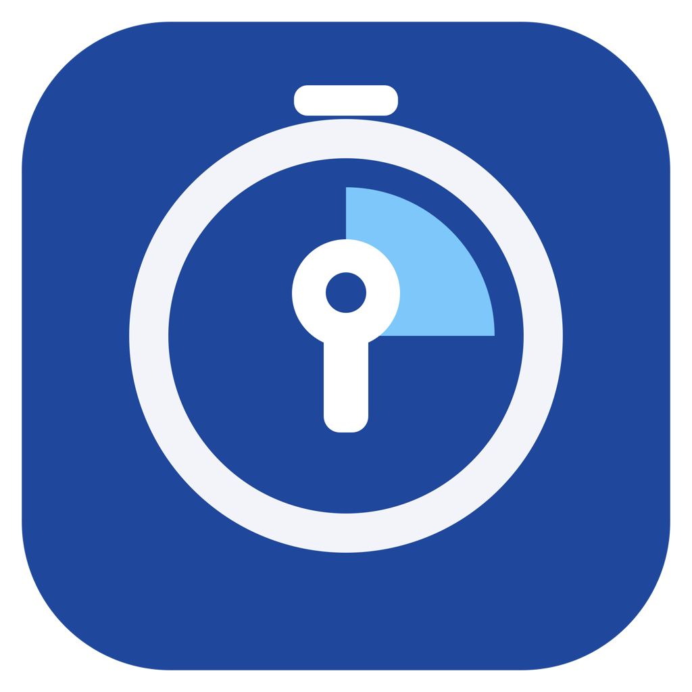
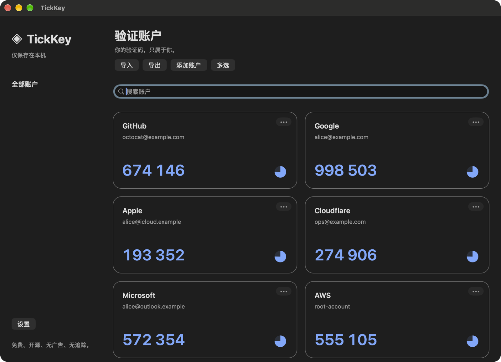

免费的本地两步验证器，支持 Mac、iPhone 与 iPad。无账户注册、广告、分析 SDK 或服务端，验证码完全在本机生成。 A free, local two-factor authenticator for Mac, iPhone and iPad. No sign-up, ads, analytics or servers — codes are generated entirely on your device.

支持标准 TOTP（SHA-1 / SHA-256 / SHA-512，6–8 位，1–300 秒）与 Google Authenticator 迁移二维码。Standard TOTP (SHA-1 / SHA-256 / SHA-512, 6–8 digits, 1–300 s) and Google Authenticator migration QR codes.
不确定芯片类型？打开「苹果菜单 › 关于本机」，看“芯片”或“处理器”一栏。Not sure which chip you have? Open › About This Mac and check “Chip” or “Processor”.
iOS-AdHoc.ipa 只能安装到已加入描述文件的设备。The iOS app is not on the App Store yet. The iOS-AdHoc.ipa in each release installs only on provisioned devices.